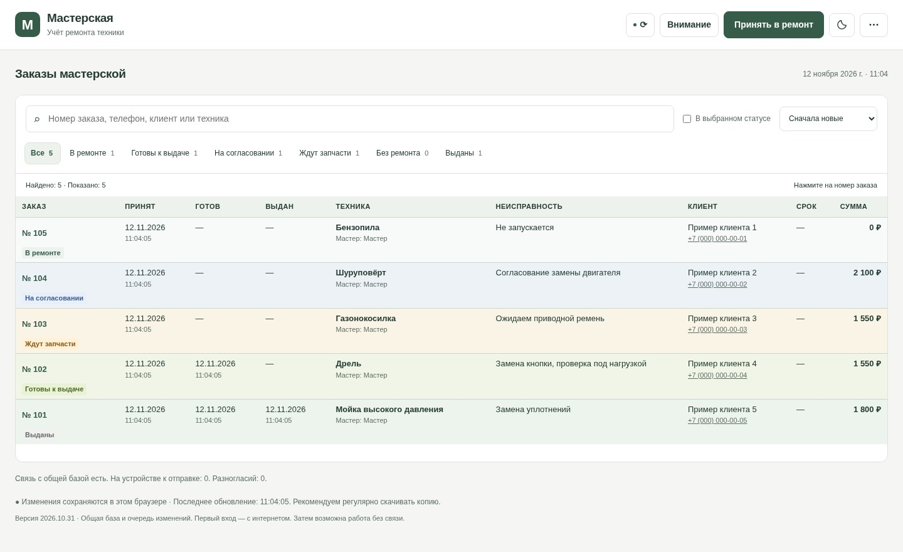
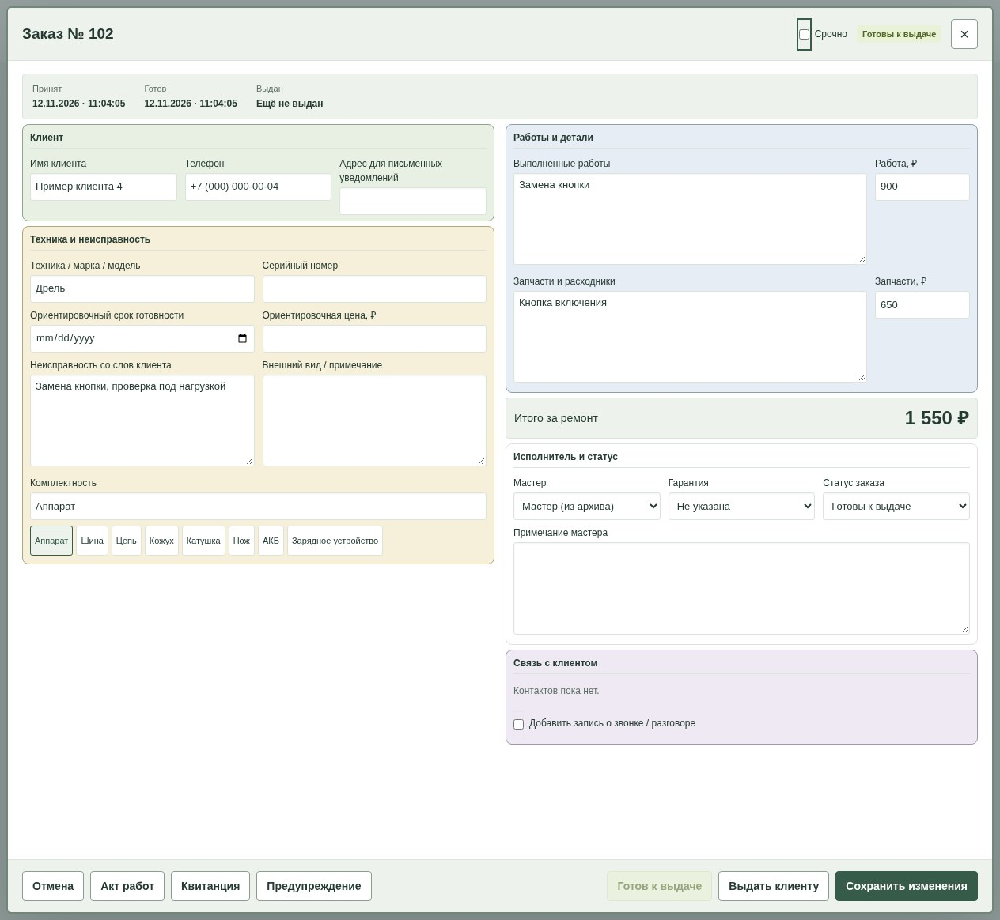
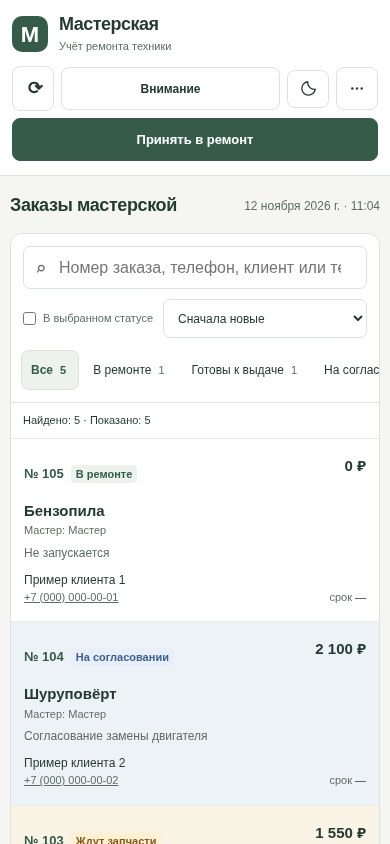

Принять
Запишите технику, телефон и неисправность.
Заказы, клиенты и стоимость ремонта — в одном журнале. На компьютере и телефоне.

Запишите технику, телефон и неисправность.
По номеру, клиенту или модели.
Укажите стоимость и отметьте выдачу.
Текущий интерфейс. Данные вымышлены.


Выберите технику и нажимайте кнопку, чтобы пройти этапы ремонта.
Учебный пример. Ничего не сохраняется.
Не включается. Проверить кнопку и питание.
Записали клиента, неисправность и то, что он оставил вместе с техникой.
Прочитайте короткую памятку. Публичный выпуск программы пока готовится.
Как пользоваться →Да. Для общей базы нужна настройка и первый вход с интернетом. Затем можно сохранять заказы без связи до 7 дней после проверки доступа. После подключения выполните синхронизацию.